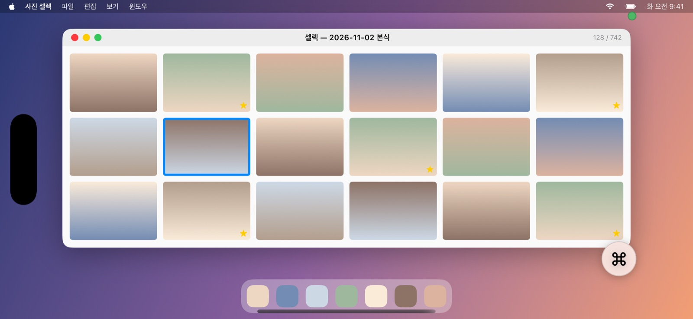
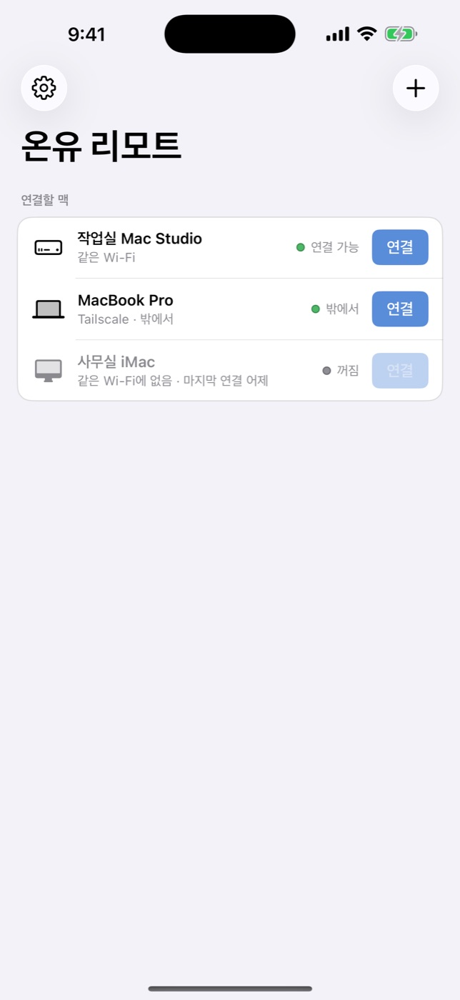
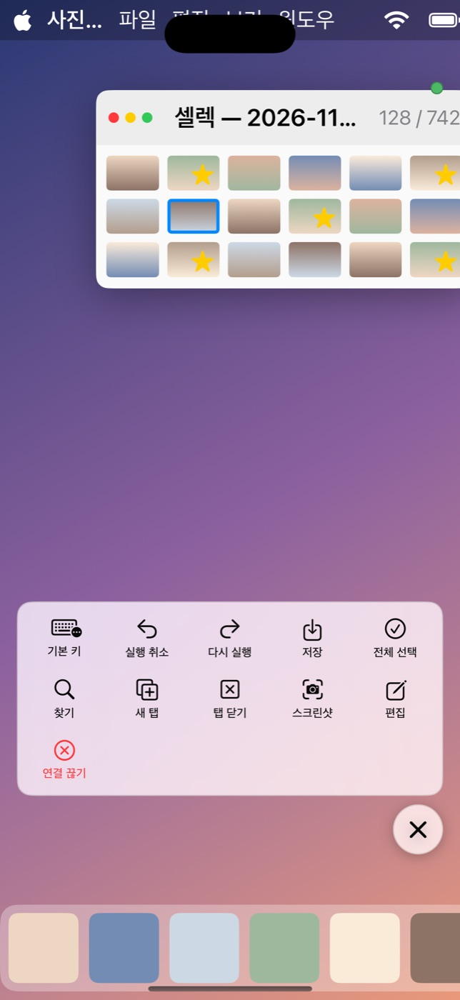
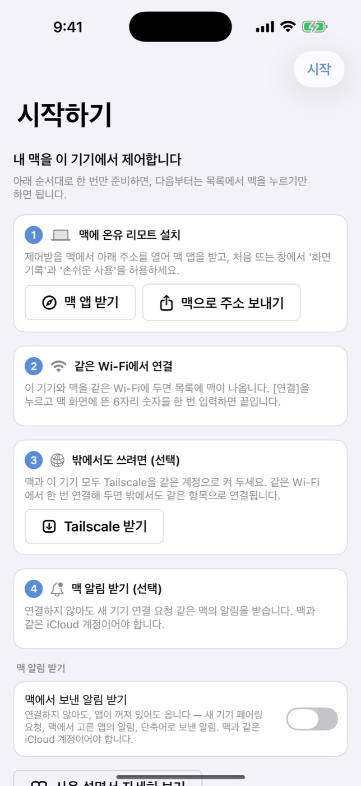

내 맥을, 어디서든.
아이폰·아이패드·맥에서 내 맥을 렉 없이 제어합니다.
무료 · 맥 앱 1.1.3 · macOS 15 이상 · iOS 18 이상

빠르기
기다리지 않는 화면.
받은 화면을 쌓아 두지 않고 바로 보여 줍니다. 늦게 도착한 화면은 다시 받지 않고 버려서, 손이 움직인 만큼 화면이 따라옵니다. 화면이 멈추면 한 장을 더 선명하게 다시 보내, 사진의 초점까지 확인할 수 있습니다.
버퍼 0
화면을 쌓아 두지 않고 받는 즉시 표시
초당 60장
하드웨어 HEVC로 부드럽게
멈추면 선명하게
정지 화면은 고화질로 한 번 더
조작
손가락 하나로, 맥 전체를.
구석의 버튼을 누르면 조작 패널이 열립니다. 수정 키를 고정해 두고, 한/영을 바꾸고, 직접 만든 단축키 버튼을 누릅니다.



기능
작업에 필요한 것만, 빠짐없이.
기기에 딱 맞는 화면
연결하는 동안만 맥 화면을 아이폰·아이패드 크기에 맞춥니다. 검은 띠 없이 꽉 차고, 끊으면 원래대로 돌아옵니다.
손에 익은 조작
트랙패드처럼 밀고 탭하고, 두 손가락으로 스크롤. 애플 펜슬, 매직 키보드, 트랙패드도 그대로 씁니다.
키보드 그대로
한/영 전환과 Command·Option·Control·Shift를 맥에 그대로 보냅니다. 맥에서 맥을 제어할 때는 ⌘Tab까지.
내 버튼
자주 쓰는 단축키를 버튼으로 만들어 패널에서 바로 누릅니다. 아이폰이 작업용 리모컨이 됩니다.
맥 알림 받기
연결하지 않아도 맥에서 보낸 알림이 아이폰으로 옵니다. 새 기기가 연결하려 할 때도 바로 압니다.
화면 가리기
원격으로 쓰는 동안 맥의 모니터를 검게 가립니다. 화면은 제어하는 기기에서만 보입니다.
맥끼리 파일·클립보드
맥에서 맥으로 파일을 끌어다 놓고, 한쪽에서 복사한 글자를 다른 쪽에서 붙여넣습니다.
항상 켜 두기
로그인하면 켜지고, 꺼져도 스스로 다시 켜집니다. 연결이 끊기면 알아서 다시 붙습니다.
보안
내 기기끼리만, 직접.
화면·조작·파일은 연결마다 새로 만든 키로 모두 암호화되고, 중간 서버 없이 기기끼리 직접 오갑니다. 처음 한 번 맥 화면에 뜨는 6자리 숫자를 넣은 기기만 연결할 수 있습니다. 계정도, 가입도, 수집하는 정보도 없습니다.
시작하기
세 단계면 됩니다.
맥에 설치
제어받을 맥에 온유 리모트를 설치하고, 처음 뜨는 창에서 화면 기록과 손쉬운 사용 권한을 허용합니다.
같은 Wi-Fi에서 연결
아이폰·아이패드의 목록에 맥이 나타나면 [연결]을 누르고, 맥에 뜬 6자리 숫자를 한 번 입력합니다.
밖에서도
맥과 기기에 Tailscale을 같은 계정으로 켜 두면, 밖에서도 같은 항목으로 연결됩니다.
내려받기
맥용 온유 리모트
제어받는 맥과, 다른 맥을 제어하는 맥 모두 이 앱 하나면 됩니다. Apple의 공증을 받은 설치 파일이라 경고 없이 열립니다.
자세히
b527454795861f3ce4e2d5cf91e1bc01efb6a2aebfd507d40b4aed766b30b911받은 파일이 원본과 같은지 확인하는 값입니다. 터미널에서 shasum -a 256 OnyuRemote.dmg를 실행해 같은 값이 나오면 변조되지 않은 파일입니다. 확인하지 않아도 맥이 설치할 때 Apple 공증으로 따로 검증합니다.